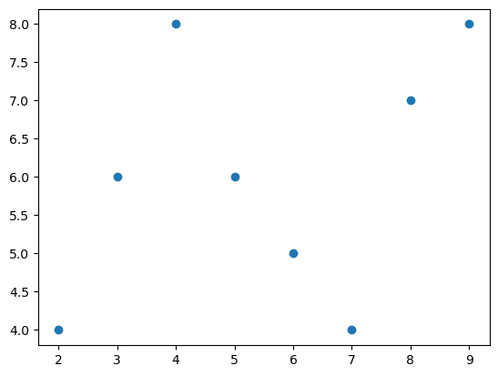
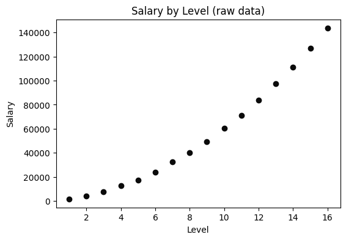
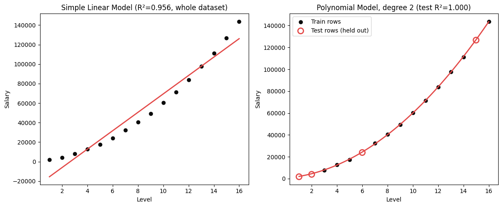
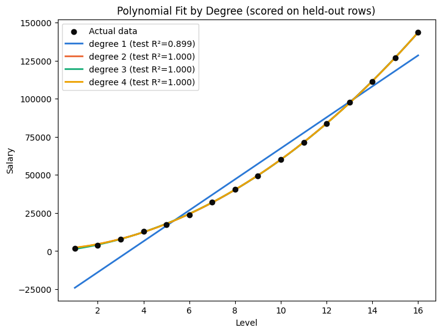

When a straight line is too simple and a wiggly curve is too eager.
2 notebooks
The problem behind this topic
Meena's data curved and her straight line missed it everywhere. So she let the model bend — degree 2, then 3, then 15.
By degree 15 the curve passed through every single training point. Perfect training score.
On the test rows it was a disaster. The curve had stopped following the trend and started following the noise, whipping wildly between points.
That is the whole overfitting story in one picture: too simple and you miss the pattern, too flexible and you memorise the accidents. Degree is the dial between them.
🔑 The one idea
Raising the degree lets the curve bend. Raise it too far and it memorises the noise.
This notebook explores a small polynomial regression example using a synthetic dataset. The goal is to understand how a linear model can be extended to capture curved relationships between input and target variables.
Learning flow
Understand the dataset and pattern
Split data into train and test sets
Fit a simple linear model baseline
Extend the model with polynomial features
Compare how shape changes affect learning
Workflow progress
✅ Dataset loading
✅ Dataset understanding
✅ Initial visualization
✅ Train/test split
✅ Linear regression baseline
✅ Polynomial feature expansion
🔜 Interpretation and interview notes
Note
This notebook is meant to be both executable and educational: the code stays close to the learner's original work, while the markdown explains the ML concept behind each step.
codecell 1
import matplotlib.pyplot as plt
import numpy as np
X = np.array([2, 3, 4, 5, 6, 7, 8, 9])
Y = np.array([4, 6, 8, 6, 5, 4, 7, 8])
plt.scatter(X, Y)
Output
<matplotlib.collections.PathCollection at 0x7fd5ba5b8ee0>

Output from this notebook.
📊 What Does This Chart Show?
This scatter plot shows the raw relationship between the input value X and the target value Y. The data points are not perfectly aligned on a straight line, which suggests the relationship may be curved rather than purely linear.
X-Axis
The x-axis is the feature value, which is the independent variable in this tiny dataset.
Y-Axis
The y-axis is the target value, the quantity we are trying to predict.
👀 What Should I Look For?
Look for a pattern: does the data rise and fall in a smooth curve, or does it look like a straight line would work?
💡 Interpretation
The shape suggests a non-linear trend. A simple linear regression model may be too rigid to capture the pattern well.
⚠️ Important Observation
The plotted relationship is noisy and small in size, so we should be careful not to overfit a model just because it matches the training points very closely.
This first code cell creates the raw dataset and plots the points on a 2D graph. The goal is to answer one important question: does this relationship look linear, curved, or noisy?
🧠 Concept
A scatter plot helps us see the pattern between input values and target values before training a model. If the points bend upward or downward, a simple straight line may not be enough.
❓ Why Do We Need This?
Before choosing a model, we need to inspect the data visually. Machine learning is not just about fitting equations; it is about understanding the shape of the problem.
🔤 Important Syntax
np.array(...) creates a NumPy array.
plt.scatter(x, y) draws a scatter plot.
X is the input feature and Y is the target value.
codecell 4
from sklearn.model_selection import train_test_split
X_train, X_test, y_train, y_test = train_test_split(X, Y, test_size = 0.3, random_state=0)
📊 What Does This Split Mean?
This split creates the training and testing sets for a supervised learning workflow.
X-Axis / Y-Axis
Not applicable here; this step is about data partitioning rather than plotting.
👀 What Should I Look For?
Check the sizes of each subset and confirm the distribution is representative.
💡 Interpretation
The model learns from the training set and is measured on the test set. This is the standard way to reduce over-optimistic evaluation.
⚠️ Important Observation
Using a random_state makes the split reproducible, which is important for comparing models consistently.
The next step splits the dataset into training and testing portions. This lets us train the model on one subset and evaluate it on unseen data.
🧠 Concept
A machine learning model should be judged on new, unseen examples. If you evaluate on the same data used to train it, you get an overly optimistic result.
❓ Why Do We Need This?
The train/test split estimates how well the model will generalize to real data outside the training set.
🔤 Important Syntax
train_test_split(...) divides data into train and test subsets.
test_size=0.3 means 30% of the data is reserved for testing.
random_state=0 makes the split reproducible.
📐 Data Shapes
X is a 1D array of input values.
Y is a 1D array of target values.
After splitting, we get X_train, X_test, y_train, and y_test.
The split is done so the model learns from the training data and is checked on the test data.
codecell 7
X_train=X_train.reshape(-1, 1)
X_train
Output
array([[9],
[5],
[2],
[7],
[6]])
🎯 What Are We Doing?
This cell reshapes the training data to match the scikit-learn expectation for a model that learns from a feature matrix: each sample must have one feature column.
🧠 Concept
A 1D array of shape (n,) is not always enough for a machine learning estimator, especially for a model expecting a 2D matrix of shape (n, 1). Reshaping preserves the same values while giving the model a proper feature matrix.
❓ Why Do We Need This?
The model learns from rows of features. Here, each training example has exactly one feature: the input value x.
🔤 Important Syntax
reshape(-1, 1) means: keep one column and infer the number of rows automatically.
This converts (n,) to (n, 1).
For example, 8 values become a matrix with 8 rows and 1 column.
codecell 9
X_test=X_test.reshape(-1, 1)
X_test
Output
array([[8],
[4],
[3]])
📌 What Happened?
The testing feature array was reshaped in the same way as the training data, so both sides of the model fit and evaluation use consistent matrix shapes.
🔍 Why This Matters
Scikit-learn models expect a 2D array for features. Without reshaping, the model would receive a 1D vector and may error or behave incorrectly.
📐 Shape check
Before: X_test was 1D, shape roughly (n,)
After: X_test becomes (n, 1)
This keeps the model input format consistent across the training and test pipeline.
codecell 11
from sklearn.linear_model import LinearRegression
model = LinearRegression()
🎯 What Are We Doing?
This cell creates the baseline linear regression model. It will learn a straight-line relationship from the feature values to the target values.
🧠 Concept
A simple linear model assumes the relationship can be approximated with the form:
y = mx + b
where:
x is the input feature
y is the predicted value
m is the slope or coefficient
b is the intercept
❓ Why Do We Need This?
Before trying a more flexible polynomial model, we should establish a baseline. If the straight line is already good enough, the polynomial may be unnecessary.
🔤 Important Syntax
LinearRegression() creates a linear model object.
model stores the learned parameters after fitting.
The model has not learned anything yet; it has only been initialized.
codecell 13
model.fit(X_train,y_train)
Output
LinearRegression()
📊 What Does This Model Fit Tell Us?
The linear regression model learns the best straight line for the training data by minimizing the difference between predicted values and actual values.
X-Axis
The x-axis is the feature value, the input variable used to predict the target.
Y-Axis
The y-axis is the target value, or the value we are trying to estimate.
👀 What Should I Look For?
A good fit should capture the overall trend without overreacting to noise.
💡 Interpretation
This is our baseline: if a straight line cannot explain the relationship well, the data likely needs a polynomial term.
⚠️ Important Observation
A model can look good on the training set and still be weak on unseen data. That is why we evaluate on the test split.
This code trains the linear regression model on the training data. The model learns the coefficient and intercept that best fit the training points.
🧠 Concept
The fit() method is where the learning happens. The model receives input features and target values and internally solves for the best straight line.
❓ Why Do We Need This?
Without fitting, the model is just an empty object. Training is how it absorbs the relationship in the data.
🔤 Important Syntax
model.fit(X_train, y_train)
X_train are the features
y_train are the actual target values to learn from
The learned model can then be used for prediction on new values.
codecell 16
model.score(X_test,y_test)
Output
0.6690401934888458
📌 What Happened?
The model was evaluated on the unseen test set. The result is a single score describing how well the prediction aligns with the true target values.
🧠 Concept
For regression, R² is commonly used. It tells us how much of the variation in the target is explained by the model.
❓ Why Do We Need This?
A model that fits the training set perfectly may still fail on new data. The test score helps estimate generalization.
⚠️ Important Observation
With a small dataset and a weak linear assumption, the score may tell us the relationship is not well modeled by a straight line. This motivates polynomial features.
codecell 18
y_pred = model.predict(X_test)
y_pred
Output
array([6.3358209 , 4.63432836, 4.20895522])
🎯 What Are We Doing?
This cell uses the trained model to generate predictions for the test values. We then compare predicted values against actual test targets.
🧠 Concept
Prediction is the application phase: once the model has learned relationships from training data, it can estimate outputs for new examples.
❓ Why Do We Need This?
Predictions give us a concrete signal of model quality. If predictions are far from true values, the model may be too simple or poorly fit.
🔤 Important Syntax
model.predict(X_test) uses the learned model to estimate output values.
y_pred stores the predicted target values.
This step connects the training phase to evaluation and visualization.
This section transforms the original feature into polynomial features, then fits a linear model on those transformed features. Even though the underlying regression is still linear, the feature space is now curved.
🧠 Concept
Polynomial regression is a way to model curved relationships without abandoning linear regression itself. We create new features such as $x^2$, $x^3$, and so on, then apply linear regression in this expanded feature space.
❓ Why Do We Need This?
A straight line cannot represent a curved pattern well. By adding powers of the input feature, we allow the model to learn a curve while still using a familiar linear estimator.
🔤 Important Syntax
PolynomialFeatures(degree=2) creates new input features like x, x^2, and interaction terms.
fit_transform(...) builds the transformed feature matrix.
LinearRegression() still fits a linear model, but on the expanded inputs.
📐 Data Flow
Raw feature: x
↓
Polynomial expansion: [x, x^2]
↓
Linear regression fit
↓
Curved prediction line
Polynomial regression is a way to keep the model linear while allowing the learned curve to bend.
The basic idea is:
y = b + w_1x + w_2x^2 + w_3x^3 + \dots
This means the model can learn a curved function by using powers of the original feature. The regression remains linear in the coefficients, even though the feature map is nonlinear.
Why this matters
A straight line cannot fit many real-world patterns well.
Adding polynomial terms gives the model more flexibility.
But too high a degree can lead to overfitting.
Interview perspective
Common Question
Note
Why do we use polynomial regression instead of just fitting a line?
Short Answer
A line assumes a constant slope, but many real relationships curve. Polynomial regression adds nonlinear terms so the model can represent those curves while still using linear regression machinery.
📝 What I Learned
X is the feature and Y is the target.
A linear model learns a straight line.
A polynomial model creates transformed features like x^2, x^3, etc.
Higher-degree polynomials can better fit curved data but may overfit.
The train/test split helps estimate real-world generalization.
🎯 Interview Notes
A linear model is a baseline, not necessarily the final answer.
Polynomial features are still common in ML when the relationship is nonlinear but manageable.
Model complexity must be balanced against validation performance.
The goal is to learn the pattern, not just memorize the training data.
It's still called linear regression under the hood — "linear" refers to the coefficients (b0, b1, b2, ...) being combined in a straight-forward sum, not to the shape of the curve itself. In practice, this means: build new columns (x, x², x³, ...) out of the one original column, then hand those to the exact same LinearRegression used in the last two notebooks. No new algorithm — just new features.
../../_shared_data/polynomial_dataset.csv is the classic teaching example for this: 16 job levels (Level) and the salary that comes with each (Salary). Salary doesn't grow by a fixed amount per level — it accelerates, curving upward. A straight line can't hug that curve; a polynomial can.
This notebook: load and look at the data, fit an ordinary straight-line model first (and watch it fail to hug the curve — the same "Simple linear model vs Polynomial model" comparison from the course slide), then build polynomial features and train the real model with the same train_test_split habit used in 26_ and 27_, compare degrees, and finish by predicting an in-between level to see how differently a line and a curve handle it.
codecell 1
import pandas as pd # pandas: load the CSV and work with it as a table (DataFrame)
import numpy as np # numpy: build the smooth grid of x-values used to draw curves
import matplotlib.pyplot as plt # matplotlib: plotting
from sklearn.linear_model import LinearRegression # fits a straight line — used both alone and after polynomial transforms
from sklearn.preprocessing import PolynomialFeatures # turns one column (Level) into Level, Level², Level³, ... columns
from sklearn.model_selection import train_test_split # splits data into a training pool and a held-back testing pool
Step 1 — Load the dataset
codecell 3
dataset = pd.read_csv("../../_shared_data/polynomial_dataset.csv") # read the CSV file from disk into a pandas DataFrame called "dataset"
Step 2 — Look at the data
Only 16 rows this time, so we can look at the whole thing at once instead of just a head().
Same habit as every earlier ML/ topic: confirm there are no gaps before training anything.
codecell 9
dataset.isnull().sum() # count missing values per column — should be 0
Output
Level 0
Salary 0
dtype: int64
Step 5 — Visualize the raw relationship
Before fitting anything, look at the shape of the data. Level climbs by a fixed step (1, 2, 3, ...), but Salary doesn't rise by a fixed amount each time — the gap between consecutive salaries keeps growing. That accelerating, curved shape is the whole reason this topic exists: a straight line is built to add a constant amount of y per unit of x, which is exactly the one thing this data isn't doing.
codecell 11
plt.figure(figsize=(6, 4))
plt.scatter(dataset["Level"], dataset["Salary"], color="#0b0b0b") # actual data — dark dots, no fit line yet
plt.xlabel("Level")
plt.ylabel("Salary")
plt.title("Salary by Level (raw data)")
plt.show()

Output from this notebook.
Step 6 — Split into x (input) and y (target)
x is built with double square brackets (dataset[["Level"]]) so it comes out as a 2-D DataFrame — the shape scikit-learn expects — rather than a 1-D Series, avoiding the manual reshape that a single-bracket x needed back in 26_.
codecell 13
x = dataset[["Level"]] # double brackets -> 2-D DataFrame (1 column), the shape scikit-learn expects
y = dataset["Salary"] # single bracket -> 1-D Series, the target
x.ndim, y.ndim # confirm: 2 for x, 1 for y
Output
(2, 1)
Step 7 — A quick straight-line baseline
Before reaching for anything fancier, fit the simplest possible model straight onto the raw x and y — an ordinary LinearRegression, no transformation. This one is deliberately quick and rough: it's fit on the whole dataset with no train/test split, purely to see how a straight line fails before building the real, properly-evaluated polynomial model in the next steps.
codecell 15
lin_reg = LinearRegression() # a plain straight-line model, same class used in every regression notebook so far
lin_reg.fit(x, y) # fit it directly on Level -> Salary, no transformation, no split — just a quick visual baseline
Output
LinearRegression()
Step 8 — Turn one column into many (PolynomialFeatures)
PolynomialFeatures(degree=2) takes the single Level column and builds a new table with Level and Level² as extra columns (plus a constant 1 column by default — include_bias=True). That's the entire trick behind polynomial regression: it's a feature-engineering step, not a different algorithm — the same LinearRegression fits a straight-line-style equation on top of these curved features, which is what lets the combined result curve.
The result is kept as a separate x_poly, rather than overwriting x, so the original single Level column stays available below for the baseline comparison chart. Because PolynomialFeatures only ever looks at one row at a time — Level² for a row never depends on any other row's Level — there's no "peeking at the test set" risk in transforming before splitting, unlike a transformer such as StandardScaler (see 15_Feature_Scaling.ipynb) that computes a mean/std across rows and genuinely would leak test-set information if fit before the split.
codecell 17
pf = PolynomialFeatures(degree=2) # will build: [1, Level, Level^2] — 3 columns (bias column included by default)
pf.fit(x) # learn how many/which power columns to build, from x's shape
x_poly = pf.transform(x) # apply that transform — x_poly now has 3 columns instead of x's 1
x_poly.shape # confirm shape: (16, 3)
Output
(16, 3)
Step 9 — Split into train and test sets
Same habit as 26_ and 27_: hold back 20% as a test set the model never trains on, so its score means something. random_state=42 keeps the split reproducible. Worth being honest about the one real tradeoff here: 20% of only 16 rows is 4 test rows — far too few to be a statistically solid estimate on its own. The split is still applied, both because it's the same evaluation habit used everywhere else in this series and because it's what the underlying course teaches — just don't over-trust a single R² computed from 4 points the way you might trust one computed from hundreds.
codecell 19
x_train, x_test, y_train, y_test, idx_train, idx_test = train_test_split(
x_poly, y, dataset.index, test_size=0.2, random_state=42
) # split the polynomial-expanded columns; idx_train/idx_test carry along which original rows landed in each split
len(x_train), len(x_test) # 12 rows to train on, 4 held back to test on
Output
(12, 4)
Step 10 — Train the polynomial model
Same model class, same .fit() call as Step 7 — the only differences are that it's looking at the 3 polynomial columns instead of 1, and only at the training rows.
codecell 21
poly_reg = LinearRegression() # another plain LinearRegression — the curve comes entirely from the input columns, not the model
poly_reg.fit(x_train, y_train) # train only on the 12 training rows
Output
LinearRegression()
Step 11 — Score the model on unseen data
.score() returns R² on the 4 held-out test rows — the model never saw these during training. This is the number that should actually be trusted as "how good is this model," as opposed to the Step 7 baseline, which was never evaluated this rigorously.
Test R² (degree 2, held-out 4 rows): 0.9999
Train R² (degree 2, seen 12 rows): 0.9999
Step 12 — Simple Linear Model vs Polynomial Model, side by side
This is the exact comparison from the course slide: a straight line forced through curved data on the left, the polynomial model on the right. Training rows are plotted as filled dark dots, the 4 held-out test rows are outlined in the same accent color as their fit line, so it's visible which points the polynomial model never saw during training. Since Level only takes whole-number steps (1–16), a smooth-looking curve needs a finer grid of x-values than the data itself provides — np.linspace builds 200 evenly spaced points between 1 and 16, each pushed through the same pf.transform() used in training, so the model predicts a salary for each; plotting straight lines between those close-together points reads as one smooth curve.
codecell 25
level_grid = pd.DataFrame({"Level": np.linspace(x["Level"].min(), x["Level"].max(), 200)}) # 200 evenly spaced Level values, as a 1-column DataFrame
salary_curve = poly_reg.predict(pf.transform(level_grid)) # predicted salary at every one of those 200 points
fig, axes = plt.subplots(1, 2, figsize=(12, 5))
axes[0].scatter(x, y, color="#0b0b0b")
axes[0].plot(x, lin_reg.predict(x), color="#e34948", linewidth=2)
axes[0].set_title(f"Simple Linear Model (R²={lin_reg.score(x, y):.3f}, whole dataset)")
axes[0].set_xlabel("Level")
axes[0].set_ylabel("Salary")
axes[1].scatter(dataset.loc[idx_train, "Level"], dataset.loc[idx_train, "Salary"], color="#0b0b0b", label="Train rows")
axes[1].scatter(dataset.loc[idx_test, "Level"], dataset.loc[idx_test, "Salary"], facecolors="none", edgecolors="#e34948", s=90, linewidth=2, label="Test rows (held out)")
axes[1].plot(level_grid, salary_curve, color="#e34948", linewidth=2)
axes[1].set_title(f"Polynomial Model, degree 2 (test R²={poly_reg.score(x_test, y_test):.3f})")
axes[1].set_xlabel("Level")
axes[1].set_ylabel("Salary")
axes[1].legend()
plt.tight_layout()
plt.show()

Output from this notebook.
Step 13 — Compare multiple degrees at once
Why degree 2, and not 3 or 4? This chart repeats the same fit-on-train, score-on-test workflow for degrees 1, 2, 3, and 4, and draws every resulting curve on the same axes. Degree 1 (the plain line) tests clearly worse than everything else — but degrees 2, 3, and 4 all land in the same tight neighborhood on test R², since this dataset's true shape is close to a simple curve (a parabola) that degree 2 already captures. Degrees 3 and 4 aren't "more correct" here, they're just not needed — the honest lesson is that more degrees isn't automatically a better fit, only useful up to however many bends the real relationship actually has. Past that point, extra degrees mostly add flexibility to fit noise instead of signal (overfitting), which is easiest to catch precisely by scoring on held-out rows like this rather than on the same rows the model trained on.
codecell 27
degrees = [1, 2, 3, 4]
colors = ["#2a78d6", "#eb6834", "#1baf7a", "#eda100"] # one fixed color per degree, in order
plt.figure(figsize=(8, 6))
plt.scatter(x, y, color="#0b0b0b", label="Actual data", zorder=5)
for degree, color in zip(degrees, colors):
pf_d = PolynomialFeatures(degree=degree) # this degree's own transformer
x_deg = pf_d.fit_transform(x)
x_deg_train, x_deg_test, y_deg_train, y_deg_test = train_test_split(x_deg, y, test_size=0.2, random_state=42) # same split every time (same random_state)
model = LinearRegression()
model.fit(x_deg_train, y_deg_train) # fit on this degree's training rows
grid_pred = model.predict(pf_d.transform(level_grid)) # predict across the same smooth grid from Step 12
test_r2 = model.score(x_deg_test, y_deg_test)
plt.plot(level_grid, grid_pred, color=color, linewidth=2, label=f"degree {degree} (test R²={test_r2:.3f})")
plt.xlabel("Level")
plt.ylabel("Salary")
plt.title("Polynomial Fit by Degree (scored on held-out rows)")
plt.legend()
plt.show()

Output from this notebook.
Step 14 — Predict an in-between level, both ways
Imagine a candidate describes their previous role as "a bit above level 6" — there's no exact row for that in the data. Level = 6.5 doesn't exist in dataset, so this is a genuine prediction, not a lookup. Comparing what the quick straight-line baseline says against what the properly-trained degree-2 model says shows exactly why the choice of model matters in practice: they don't just differ slightly, they can disagree by a large margin, and only one of them is actually tracking the visible curve.
codecell 29
new_level = pd.DataFrame({"Level": [6.5]}) # a level that isn't in the original data
linear_prediction = lin_reg.predict(new_level)[0]
poly_prediction = poly_reg.predict(pf.transform(new_level))[0]
print(f"Simple Linear Model predicts: ₹{linear_prediction:,.0f}")
print(f"Polynomial Model (deg 2) predicts: ₹{poly_prediction:,.0f}")
Output
Simple Linear Model predicts: ₹36,410
Polynomial Model (deg 2) predicts: ₹27,973
Step 15 — See that prediction on the chart
Marking both predicted points for Level = 6.5 on top of the degree-2 curve and the actual neighboring data (Level 6 = ₹23,933, Level 7 = ₹32,340) makes the gap concrete: one prediction sits right on the curve between its neighbors, the other doesn't.
Polynomial Regression isn't a new algorithm — it's PolynomialFeatures turning one column into several curved ones (x, x², ...), then the same LinearRegression from every earlier topic fits a straight-line-style equation on top of them.
It's still called linear regression because it's linear in the coefficients (b0, b1, b2, ...), not because the resulting curve is straight.
PolynomialFeatures is safe to fit_transform on the whole x before splitting, since each row's new columns only depend on that row's own value — no cross-row statistic gets learned, unlike a transformer such as StandardScaler that would leak test-set information if fit before the split.
The same train_test_split habit from 26_/27_ still applies here, even on a 16-row dataset — just be honest that scoring on 4 held-out rows is a small, noisier sample than scoring on hundreds.
Raising the polynomial degree lets the curve bend more, but past however many bends the real relationship actually has, extra degrees mostly add flexibility to fit noise instead of signal (overfitting) — visible more reliably in test R² than in R² measured on the same rows the model trained on.
Predicting at a point that isn't in the training data (Level = 6.5) is where a straight line and a well-fit curve can disagree the most — and it's exactly the kind of real prediction a model gets used for.